Contents
- Introduction
Contents
-
Experimental Designs - No repeated measures
- Single-Group Average (One-Sample T-Test)
- Two-Group Difference (Two-Sample Unpaired T-Test)
- Singleton-vs-Group (Prediction Interval Test)
- F-Tests (Inter-Group differences, no repeated measures)
- Single-Group Average with Additional Covariate
- Two-Group Difference Adjusted for Covariate
- Two Groups with continuous covariate interaction
- Experimental Designs - Between Subject ANOVA Models
- Experimental Designs - Repeated measures
-
Experimental Designs - No repeated measures
- FAQ
Introduction
This GLM page attempts to be a cookery book for all common multi-subject designs encountered by FSL users, with details on how to run the design both in FEAT (for higher-level fMRI) and randomise (everything, including higher-level fMRI). The foundation of statistical modelling in FSL is the general linear model (GLM), where the response Y at each voxel is modeled as a linear combination of one or more predictors, stored in the columns of a "design matrix" X. Instead of directly specifying experimental designs (e.g. "Two-Sample t-test, 1 group of 5, one group of 8"), in FSL it is left up to the user to craft the matrix X that corresponds the experimental design and other effects to be modelled. This is not a task to be taken lightly, and it is easy to create meaningless design matrices. The notes below cannot be a substitute for study in statistical modelling, the GLM and (closely related) the general linear hypothesis. One recommended text book is "Applied Linear Statistical Models" (4th Edition or later), by Neter, Kutner, Wasserman and Nachtsheim; those with a more mathematical background may prefer "Plane Answers to Complex Questions" by Christensen.
This is a work in progress - check back for more examples and more details on how the different rules do or don't apply across the different individual programs. Many thanks to Jeanette Mumford and Tom Nichols for much work on this page (and credit to Jeanette's intro slides on various GLM/ANOVA examples that served as inspiration).
Experimental Designs - No repeated measures
We start considering only designs where there is one scan per subject, that is, no repeated measures.
Single-Group Average (One-Sample T-Test)
This is the simplest possible linear model, where a single, homogeneous group of subjects is modelled, and the mean response is tested to see if it is different from zero. This model is not appropriate for first-level fMRI or other data (e.g., FA values or FIRST vertex analysis), where the mean of the data is not of interest (e.g. consider the mean FA of a single group; testing mean(FA)>0 is pointless, as FA must be positive). This model is appropriate for higher-level fMRI data.
FEAT details
To get the most out of FEAT, be sure to have selected "Higher-level analysis" and input the lower-level FEAT directories. We have 8 subjects all in one group and want the mean group effect. Significance on contrast C1 is evidence for a positive effect, mean > 0.
|
UserGuide/eg1.png "basis functions")
Randomise details
Strictly speaking, a one-sample permutation test is impossible. Traditionally, a permutation test swaps labels between two groups of subjects (here impossible, as there is only one group) or shuffles the values of a covariate (the covariate is a column of ones, unaltered by permutation). Only with an assumption of independent symmetric errors can a specialised test be performed, where, instead of permuting the data, each subject's data is multiplied by either +1 or -1. Thus there are 2N possible sign flips. This assumption is justified by the data consisting of differences where, under the null hypothesis, the subtracted data has the same distribution; equivalently, the data can be a COPE from a GLM and then the assumption is simply that the GLM errors are centered on zero and symmetrically distributed.
Use the -1 option with randomise to indicate a one-sample t-test; see Randomise examples for more. Significance for this test will indicate a positive effect, mean > 0. To obtain the negative effect, first multiply the original data used to test the positive mean (input_data) by -1 using: fslmaths input_data.nii.gz -mul -1 neg_input_data.nii.gz and then use neg_input_data.nii.gz in randomise. In the example illustrated above, there are 8 subjects, and thus 28 = 256 possible permutations, and the smallest possible permutation P-value 1/256 = 0.0039.
Two-Group Difference (Two-Sample Unpaired T-Test)
The purpose of this model is to test whether the means of two groups differ. Significance of C1 indicates that mean(G1)>mean(G2), or the first group's mean is larger than the second. Similarly, significance of C2 indicates mean(G2)<mean(G1).
FEAT details
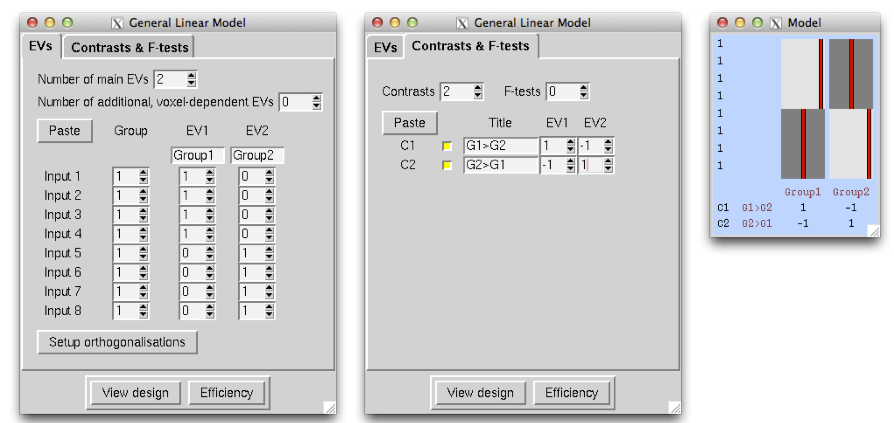 |
Randomise details
Use the same design matrix and contrasts as shown in the Feat details. There are (n1+n2)-choose-n1 = (n1+n2)! / (n1! n2!) possible permutations; here that is 8-choose-4 = 70 possible permutations and the smallest possible permutation P-value is 1/70 = 0.0143, and the largest possible below 0.05 is 0.0429.
Singleton-vs-Group (Prediction Interval Test)
This model is basically a special case of the previous model, when one group has exactly one subject in it. It typically is used to compare a patient against a group of controls.
|
FEAT details
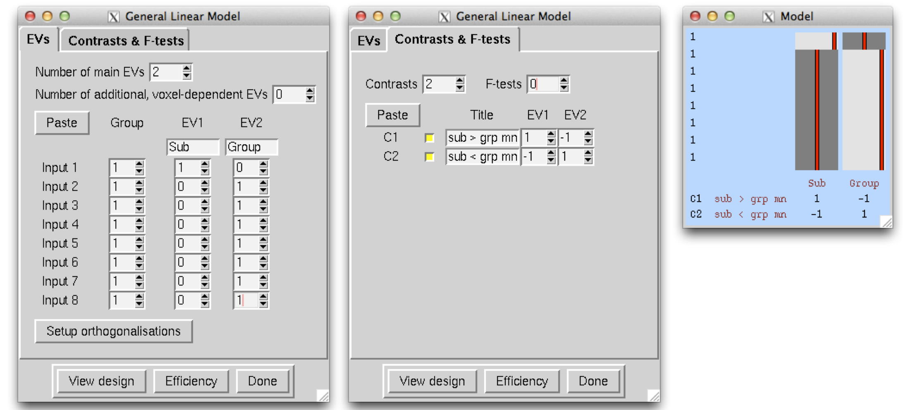 |
Randomise details
Use the same design matrix and contrasts as shown in the Feat details. There are (n+1)-choose-n = n+1 possible permutations; here that is 7+1 = 8 possible permutations and the smallest possible permutation P-value is 1/8 = 0.1250. This is of course is a problem... in this situation when we most need a nonparametric procedure with weak assumptions, we are probably unable to use it because insufficient permutations.
Recall that any number of permutations produces a valid test, so even if you have only 19+1 = 20 subjects, it may be worth trying, but P-values will be highly discrete.
F-Tests (Inter-Group differences, no repeated measures)
FEAT details
For example, three groups of subjects, with the question - do the group averages account some significant effect? Typically when an F-test is significant, individual t-tests are then used to determine the direction of the effect.
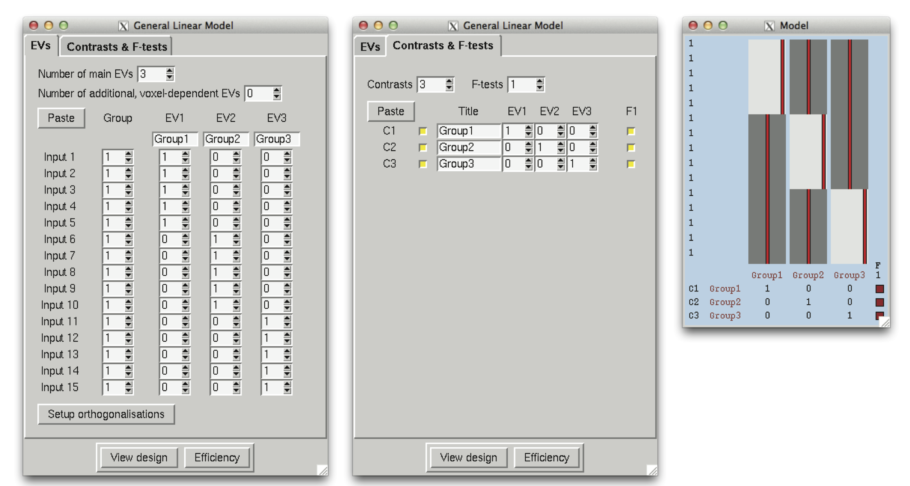 |
Randomise details
F-tests in randomise require the additional design.fts file, which can be generated for you by constructing the above design using the Glm_gui. The randomise call (using TFCE) would be the following:
randomise -i <4D_input_data> -o <output_rootname> -d <design.mat> -t <design.con> -f <design.fts> -m <mask_image> -n 500 -T
The number of possible permutations in this design is determined by the multinomial coefficient, (n1+n2+n3)! / ( n1! n2! n3! ). For this design, this is 756,756 possible permutations. Of course, it is not necessary to run all of these permutations, and a Monte Carlo permutation test (i.e. running a random subset of permutations) can be used; in the example above, a random subset of 500 permutations is requested.
Single-Group Average with Additional Covariate
FEAT details
We have 7 subjects all in one group. We also have additional measurements such as age, disability scale or behavioural measures such as mean reaction times. The additional effect of the extra measures can be found by entering this as an extra EV, which should be orthogonal wrt the group mean EV - so in this case simply demeaned. Significance of C1 indicates the mean > 0 and significance of C2 indicates a positive linear relationship (slope) between the behavioural measure and BOLD activation. If the behavioural measure is not demeaned, C1's interpretation will be the average BOLD activation when the behavioural measure has a value of 0, which often is not interesting.
|
UserGuide/eg6.png "basis functions")
Randomise details
Depending on what version of randomise is used, it may or may not handle the model described under the FEAT details section. Since the mean activation using randomise was already described above, this section will only cover obtaining inferences for the relationship between the behavioural measure and dependent variable. The following design matrix and contrast would be used in randomise with the -D option:
randomise -i <4D_input_data> -o <output_rootname> -d <design.mat> -t <design.con> -m <mask_image> -n 500 -T -D
Note that the behavioural measure is demeaned, although newer versions of randomise (FSL5 or newer) will demean both the data and design with the -D option.
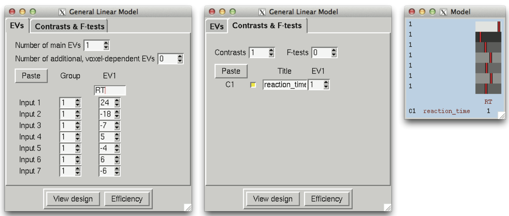 |
For a test covariate like here, the number of possible permutations is n!. For this example 7! = 5,040, which should not take very long for such a small dataset. However, a Monte Carlo test can be used, as indicated above with the -n 500 option.
Two-Group Difference Adjusted for Covariate
This is an extension of the Two-Group difference. It is often important to verify that any group differences cannot be explained by some other covariate, e.g. age or reaction time. In this example there are 10 subjects split between two groups and the inference of interest is whether the group difference remains after adjusting for age. Additionally, age inferences are also created.
FEAT details
This is exactly the Two-Group Difference model, but with a single new regressor for Age added. Age is mean centered in this model by subtracting the overall mean age from each individual age. Importantly, this is done across all subjects and not within group. The alternative, within-group mean centering, would remove any ability of age to describe group differences and if that was done the group difference inferences would not be adjusted for age. Consequently, the overall mean is removed here so that the inferences are adjusted for any age differences between the groups. The interpretation of C1 is Group1>Group2, adjusted for age. Likewise C2 is Group2>Group1, adjusted for age. C3 is the positive age effect and C4 is the negative age effect. To adjust for multiple covariates, simply add more EVs to the model, one for each additionally covariate and mean center each covariate. Even if you add a covariate like Gender, simply add a covariate that is 1 for one gender, 0 for the other and mean center this. A contrast that pulls out only the Gender covariate tests whether the male/female difference is significant.
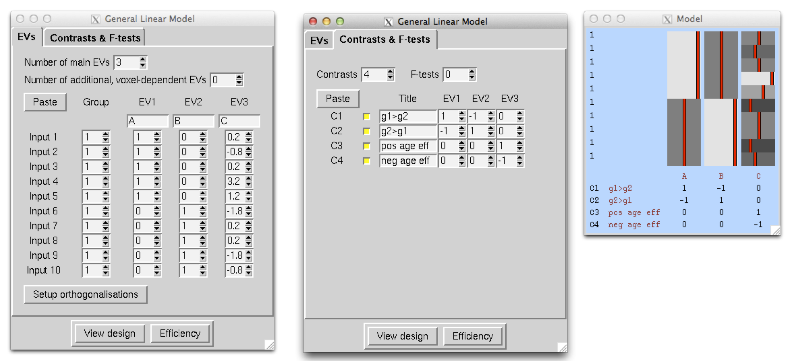 |
Randomise details
The above model may also be used with randomise. The number of permutations possible will depend on the contrast used; a contrast for a group difference will have (n1+n2)-choose-n1 possible permutations, while a contrast for the covariate will have (n1+n2)! possible permutations. Here that is 252 permutations for the group difference and 3,638,800 permutations for the covariate.
Two Groups with continuous covariate interaction
This is an extension of the previous model. There are again 10 subjects in 2 groups, but in this case the inference of interest is whether the linear relationship between the dependent variable and age differs between the two groups. Importantly, this model should only be used to interpret the interaction effect. A test of the difference in group means does not make sense in the presence of a significant interaction, as the interaction indicates that the group difference varies as a function of age. Therefore, focusing on a single age is not likely all that interesting. Instead, if the interaction is not significant, the group mean differences can be obtained from the previous model. For more details on interpreting interactions, please refer to any introductory regression text book. As mentioned above, "Applied Linear Statistical Models" by Neter et al. is a good reference. Again, if you run this model and the interaction is not significant anywhere in the brain, use the simpler, Two-Group Difference Adjusted for Covariate, model described above. If the interaction is significant, only the inferences for the interaction are of interest.
FEAT details
The interaction model splits up the age covariate from the previous model into two EVs. Again, Age is mean centered across all subjects before splitting into two EVs. Significance of C1 indicates that the slope between your dependent variable and age for Group 1 is larger than that of Group 2. C2 finds when the slope is larger for Group 2 than Group 2. Obtaining a better picture of what is happening when there's a significant interaction would require more tests of the individual group slopes.
|

Randomise details
The above model may also be used with randomise. The enumerations of permutations is the same as in the previous example.
Experimental Designs - Between Subject ANOVA Models
The term Analysis of Variance (ANOVA) refers to a number of different concepts, but here use it to describe experimental designs that are based on one or more discrete-valued variables called factors, where the unique values of each factor are called levels. In this section we only consider between subject models, that is, designs where each subject only contributes a single measurement to the analysis.
|
ANOVA: 1-factor 4-levels (1-way between-subjects ANOVA)
FEAT details
Cell means model. We have 8 subjects and 1 factor at 4 levels A, B, C and D. The first two inputs are subjects in condition A, the next two are B etc. While this is the most intuitive approach, as each "cell mean" in the ANOVA (level A, level B, etc.) is directly modelled, the standard ANOVA F-test for any cell mean differences may not seem obvious. The overall F-test, tests whether mean(A)=mean(B)=mean(C)=mean(D), which is equivalent to mean(A)-mean(D)=mean(B)-mean(D)=mean(C)-mean(D)=0. In this format it is easy to see that this F-test require simultaneously testing each mean's comparison to mean(D) or the following three contrasts: [ 1 0 0 -1], [0 1 0 -1] and [0 0 1 -1]. This F-test is set up in the GUI as well as the overall mean test, which averages the 4 cells using [0.25 0.25 0.25 0.25].
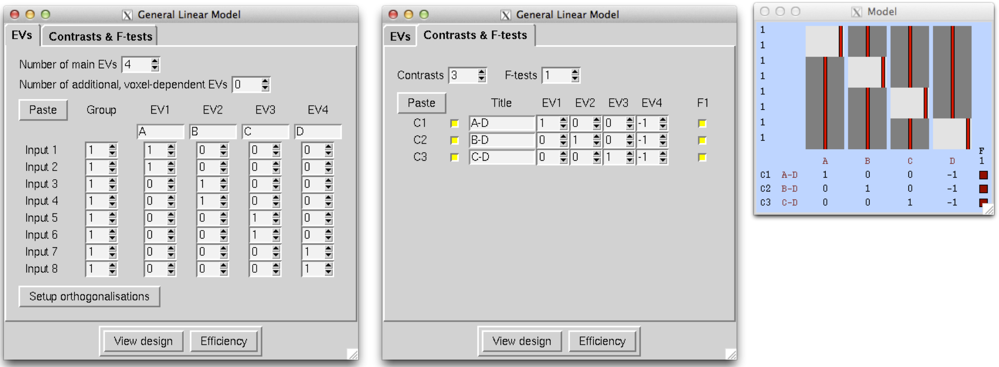 |
Factor effects model. The factor effect dummy variables are less intuitive, but the traditional ANOVA contrasts are easier to construct. More importantly, factor effects can be used with complicated (i.e. multifactor) ANOVA models (eg. the 3-factor 2-level model below). When using a factor effects setup, it is essential that your design includes a grand mean or intercept, i.e. a column of 1s. In this example there is one factor with 4 levels and so 3 EVs are necessary to model the factor. First choose a reference level (in this case we choose A) and for each EV, rows of the design corresponding to A will have a -1. For each level, construct an EV where the value is: -1 for level A, 1 for the level of interest, and 0 otherwise. The first EV is -1 for A, 1 for B and 0 for C and D. Similarly, the second EV is -1 for A, 1 for C and 0 for B and D. Lastly, the third EV is -1 for A, 1 for D and 0 for B and C. Last is the column of 1's.
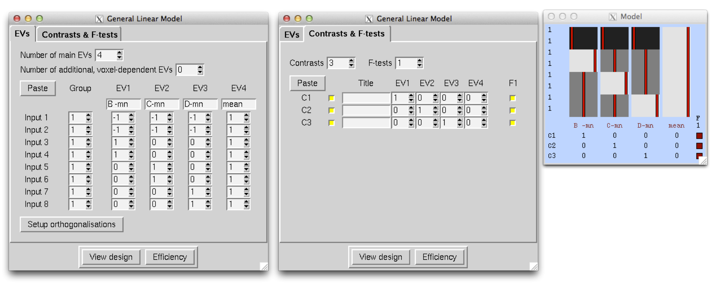 |
This seemingly odd construction derives from assuming that the factor levels sum to zero (i.e. mean(A)+mean(B)+mean(C)+mean(D)=0). Thus while the first 3 EVs may appear to be the comparison of A to each level, actually EVs 1-3 are the comparisons of levels B, C, and D, respectively, to the overall mean. As stated earlier this model makes it easier to test the standard ANOVA hypotheses. The main effect for the factor is simply an F-test that combines individual tests for each of the EVs that were constructed for the factor effect (i.e. the first 3 EVs).
Obtaining inferences for cell means is not too difficult with this model either and the contrast is actually contained in the design matrix. If the parameters estimated for this model are PE1, PE2, PE3 and PE4, matrix multiplication of the design with this parameter vector shows that all A-related values are equal to -PE1-PE2-PE3+PE4 and so the contrast to test the mean(A)=0 is [-1 -1 -1 1]. Likewise, the mean(B) corresponds to PE1+PE4 and the contrast is [1 0 0 1]. Lastly the mean(C) would be [0 1 0 1] and mean(D) would be [0 0 1 1]. The following table summarises the contrasts that correspond to each factor level mean.
Factor Effect |
PE1 |
PE2 |
PE3 |
PE4 |
mean(A) |
-1 |
-1 |
-1 |
1 |
mean(B) |
1 |
0 |
0 |
1 |
mean(C) |
0 |
1 |
0 |
1 |
mean(D) |
0 |
0 |
1 |
1 |
Note that contrasts of individual levels can be made by subtracting the corresponding contrast of PE's.
Randomise details
Either of the above models may also be used with randomise.
ANOVA: 2-factors 2-levels (2-way between-subjects ANOVA)
FEAT details
Fixed Effects
Cell means. In this case there are 8 subjects and 2 factors (A/B), each with two levels. The data are ordered: A1B1, A1B1, A1B2, A1B2, A2B1, A2B1, A2B2, A2B2. We start with the cell means approach where each EV in the model is modeling the mean of a single cell, specifically EV1=mean(A1B1), EV2=mean(A1B2), etc. Mean comparisons are straightforward to construct with this model, but the standard ANOVA F-tests take more thought. These include: main A effect, main B effect and the interaction effect. The main A effect tests whether mean(A1)=mean(A2). In this case we average the A1 cells and A2 cells to get the contrast, [1 1 -1 -1], which is selected for an F-test. Likewise the contrast for the main B effect is [1 -1 1 -1] and is selected for a separate F-test. The interaction effect tests whether A1B1-A1B2=A2B1-A2B2, which is equivalent to A1B1-A1B2-A2B1+A2B2=0, corresponding to the [1 -1 -1 1] contrast, selected as a 3rd F-test.
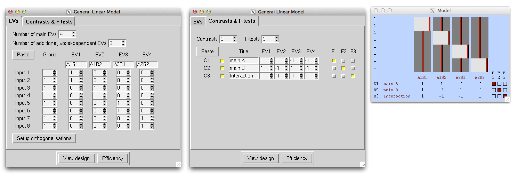 |
Factor effects approach. As stated previously, the factor effects approach is equivalent to the cell means approach, but some of the contrasts may be more intuitive. Following the rules state before, first determine how many EVs are required for each factor. In this case there are two factors, each with 2 levels and so one EV is required to model each factor's main effect. The interaction effect is constructed by multiplying these two EVs together, element-wise. Starting with factor A, assign A1 as the reference level, so the A EV has a -1 for A1 and 1 for A2. Similarly, the B EB has a value of -1 for B1 and 1 for B2. The interaction EV (3rd EV) is an element-wise product of the first 2 EVs. Lastly is the column of 1s. The F-test for the main A effect is simply and F-test that combines all individual contrasts for each A EV, in this case only the first. Likewise for the main B effect. The interaction effect, similarly, is an F-test on the interaction EV. As described in the 1-factor 4-level ANOVA example, cell means can also be obtained from this model. For example, multiplying the design matrix with the parameter vector, [PE1, PE2, PE3, PE4], yields -PE1-PE2+PE3+PE4 for all rows corresponding to A1B1 and so [-1 -1 1 1] is the contrast for A1B1. The other cell mean contrasts are displayed below.
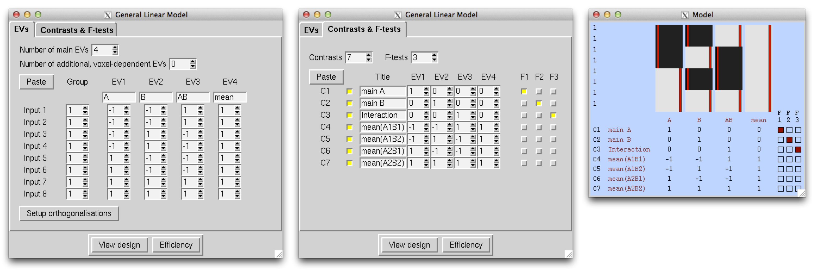 |
Random Effects If both factors are random effects then the F-tests for the effects of the factors are different - the denominator in the F is derived from the interaction effect and not the within-cell errors. In this case, the relevant F images for factors A and B can be formed as Fa=fstat1/fstat3 and Fb=fstat2/fstat3. In order to carry this out, first run FEAT using the above design. Then:
cd <featdir>/stats fslmaths fstat1 -div fstat3 fstata`<<BR>> `fslmaths fstat2 -div fstat3 fstatb ftoz -zout zfstata fstata 1 1`<<BR>> `ftoz -zout zfstatb fstatb 1 1
You could then do thresholding on zfstata and zfstatb with easythresh.
Mixed Effects
If one factor is random and the other is fixed then we want a mixed effects analysis. In this case the fstat which needs the different denominator is the one associated with the fixed factor. For example, if factor A is fixed and factor B is random, then fstat2 already gives you the effect of factor B and for factor A you need to create Fa=fstat1/fstat3 as above.
Randomise details
Either of the above models may also be used with randomise.
ANOVA: 2-factors 2- & 3-levels (2x3 between-subjects ANOVA)
FEAT details
Cell means. The design matrix setup is very similar to the previous example. In this case there are 12 subjects, two in each AB level combination. Factor A has 2 levels and B has 3 where the subjects are ordered all A1's, followed by A2, and then B1, B2, B3 within each level of A. Each EV models a cell mean and since there are 6 cells, the model has 6 EVs. To test the main A effect, the contrast comparing A1 to A2 is used. In this case each level of A is spread across the three levels of B, so they would be combined in the [1 1 1 -1 -1 -1] contrast, to reflect A1-A2. The first F-test is for the main A effect. The main B effect will require 2 contrasts. The null of the main B effect is that B1=B2=B3, which simplifies to 0=B2-B1=B3-B1. Therefore, the F-test for the main B effect uses both the B2-B1 and B3-B1 contrasts given by [-1 1 0 -1 1 0] and [-1 0 1 -1 0 1], respectively. The interaction effect tests whether the A1-A2 difference varies across levels of B. In other words, A1B1-A2B1=A1B2-A2B2=A1B3-A2B3, which simplifies to A1B1-A2B1-A1B3+A2B3=A1B2-A2B2-A1B3+A2B3=0, and corresponds to simultaneously testing [1 0 -1 -1 0 1] and [0 1 -1 0 -1 1].
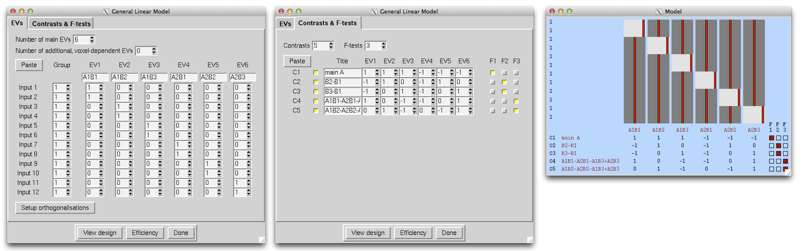 |
Factor effects approach. We again follow the rules covered in the previous factor effects setups. In this case A will have 1 EV and B will have 2 EVs to model the main effects for A and B. Since B has 2 EVs (these are referred to as B-first and B-second in the figure), the AB interaction will comprise of 2 EVS, one formed through element-wise multiplication of the A EV with the first of the B EVs and the second is the A EV multiplied by the second B EV. Specifically, A is modeled in the first EV, which takes on a value of -1 for A1 and 1 for A2. EV2 is the first of the B EVs and takes on a -1 for B1, 1 for B2 and 0 for B3. EV3 is the second of the B EVs and takes on a -1 for B1, 0 for B2 and -1 for B3. EV4 is an element-wise product of EVs 1&2 and EV5 is an element-wise product of EVs 1&3. EV6 is the overall mean.
The contrasts for the main effects and interactions are much easier using this setup. You start by setting up a contrast for each EV and the test for each effect is simply an F-test that selects the related contrasts. For example, the main A effect is modeled solely through EV1, so only contrast 1 is selected in the F-test for A. Since the main effect for B is modeled through EVs 2&3, the corresponding contrasts (C2&C3) are selected in the F-test for the main B effect. Likewise for the interaction effect.
Lastly, as described in the 1-factor 4-level ANOVA example, cell means can also be obtained from this model. For example, multiplying the design matrix with the parameter vector, [PE1, PE2, PE3, PE4, PE5, PE6], yields -PE1-PE2-PE3+PE4+PE5+PE6 for all rows corresponding to A1B1 and so [-1 -1 -1 1 1 1] is the contrast for A1B1.
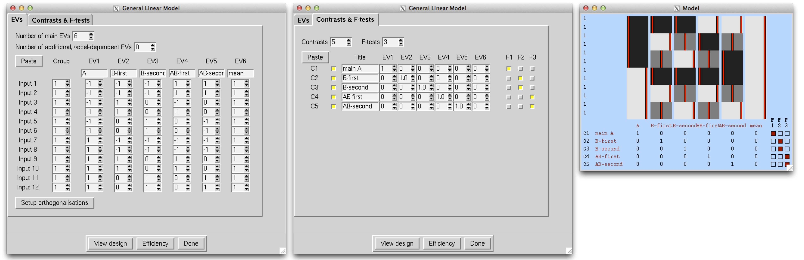 |
Randomise details
Either of the above models may also be used with randomise.
ANOVA: 3-factors 2-levels (3-way between-subjects ANOVA)
We have 16 subjects and 3 factors, each at 2 levels.
FEAT details
Fixed Effects Factor effects approach. The cell means approach should be straightforward to set up, but the test for the 3-way interaction is quite difficult. Therefore only the factor effects approach is described here. Following the steps for setting up a factor effects model, it is first determined that each factor will require a single EV (as each factor has 2 levels). In this case there will be 3 possible 2-way interactions and 1 3-way interaction. EV1 takes on a value of -1 for A1 and 1 for A2. EV2 does the same for B and EV3 does the same for C. Creating interactions is done by simply multiplying the main effect EVs (first 3 EVs in this case) of interest together, element-wise. For example, all 2 way interaction regressors are an element-wise product of the corresponding pair of EVs relating to the main effects. For the AB interaction, you would multiply the A EV with the B EV, element-wise, hence EV4 is the product of EVs 1 and 2. Likewise EVs 5 and 6 are the AC and BC interactions. For the 3-way interaction, you multiply together all main effect regressors, element-wise, and so the ABC 3-way interaction is the element-wise product of the first 3 EVs. If the mean for the A1B1C1 cell was desired, the [-1 -1 -1 1 1 1 -1 1] contrast would be use. Likewise for the other 5 cells of the ANOVA.
|
UserGuide/eg9.png "basis functions")
Random/Mixed Effects
The following table shows how to test for factor effects with various models:
model |
A |
B |
C |
F(A) |
F(B) |
F(C) |
F(AB) |
F(AC) |
F(BC) |
F(ABC) |
1 |
F |
F |
F |
fstat1 |
fstat2 |
fstat3 |
fstat4 |
fstat5 |
fstat6 |
fstat7 |
2 |
R |
R |
R |
|
|
|
fstat4/fstat7 |
fstat5/fstat7 |
fstat6/fstat7 |
fstat7 |
3 |
F |
R |
R |
|
fstat2/fstat6 |
fstat3/fstat6 |
fstat4/fstat7 |
fstat5/fstat7 |
fstat6 |
fstat7 |
4 |
F |
F |
R |
fstat1/fstat5 |
fstat2/fstat6 |
fstat3 |
fstat4/fstat7 |
fstat5 |
fstat6 |
fstat7 |
Randomise details
The the above model may also be used with randomise.
Experimental Designs - Repeated measures
The standard GLM is appropriate for data with independent, identically distributed errors. In short, this is any type of design where there is only one scan per subject. FEAT has the ability to accommodate independent data with heterogeneous variance (the mixture of common between subject variance and subject-varying measurement error noise), but cannot account for arbitrary repeated measures correlation. Likewise, randomise cannot accommodate general repeated measures designs. That said, there are several very special cases where the GLM (and Feat, and randomise) can model repeated measures, though usually with assumptions and caveats. We detail these limitations in each example below.
Single-Group Paired Difference (Paired T-Test)
This model is used when each subject has exactly 2 measures and the average difference between these two measures across subjects is of interest. In the example below there are 8 subjects, each with a measure before and after treatment (runA and runB, respectively) and the hypothesis is whether the average difference of runA-runB is different than 0.
|
FEAT details
Make sure that the subjects are in the same order within each group of 8! We need one EV for the A-B differences, and then one extra EV for each subject, making 9 in all. EVs 2-9 model each subject's mean effect - in this analysis this is a confound, i.e. parameter estimates 2-9 are ignored, but without this part of the model, the mean effects would intefere with the estimation of the A-B paired differences. A contrast with a one for EV1 and zeros elsewhere tests for A-B paired differences. Significance of C1 implies A>B and significance of C2 implies B>A. Inferences should not be carried out using contrasts that incorporate any of the subject mean effect regressors (EVs 2-9).
|
UserGuide/eg3.png "basis functions")
Randomise details
For the paired t-test, randomise requires a special type of permutation and the most fool-proof way to ensure the test is carried out correctly is to manually compute the differences between runA and runB for each subject and then enter these values into a 1-sample t-test.
As an example, assume that there are 16 separate 3D brain images (for each of the 2 runs for each of the 8 subjects). Start by using fslmaths to compute the difference between runA and runB for each subject and then use fslmerge to create a single 4D volume with 8 images (along the 4th dimension). If working with fMRI, be sure to work with cope and not tstat images.
fslmaths subject1_rA -sub subject1_rB sub1_diff fslmaths subject2_rA -sub subject2_rB sub2_diff (repeat for subjects 3-8) fslmerge -t runA_minus_runB sub1_diff sub2_diff sub3_diff sub4_diff sub5_diff sub6_diff sub7_diff sub8_diff
The resulting 4D volume (i.e. runA_minus_runB) can then be used as the input for the 1-sample t-test, as described above.
Single-Group, Three Measurements ("Tripled T-Test")
This model is similar to the paired t-test, but instead of 2 measures per subject there are exactly 3 measures per subject.
|
The assumption of this design, compound symmetry, is probably a reasonable assumption unless, say, the data are from a long or irregularly sampled longitudinal study. For example, if scan 1 and 2 are collected 1 week apart and scan 3 is collected 1 year later, it's unlikely that they are equally correlated. Note, also, only intrasubject contrasts are valid with this design. For example, a [1 1 1] contrast cannot be assessed; if such a contrast is of interest, the individual measures should be averaged with fslmaths and then studied in a one-sample t-test (assuming they are difference measures, and can be so suitably analysed).
FEAT details
This is a natural extension of the paired t-test, but the contrasts are slightly counter-intuitive so we explain this case in detail. We have 5 subjects, each scanned under 3 conditions, A, B and C. We enter the 5 condition A scans first, then 5 B and then 5 C. As with the paired t-test, EVs 3-7 simply remove the subject means and are not used in the contrasts.
We now want to form the 3 contrasts A-B, A-C and B-C. Note that, somewhat surprisingly, A-B is not given by [1 0 0...]! We define PE1=a and PE2=b. Then, we can see by looking at the three condition blocks, that the mean (on top of the global mean taken out by EVs 3-7) of condition A is modelled by A=a+b. Likewise, B=-a, and C=-b (look at the values in EVs 1 and 2). Therefore we have A-B = 2a+b = contrast [ 2 1 0....], and A-C = a+2b = contrast [ 1 2 0....], and B-C = -a+b = contrast [ -1 1 0....].
|
UserGuide/eg3b.png "basis functions")
Randomise details
It is not possible to model 3 paired differences in a single model using Randomise. Follow the Paired T-Test instructions to run the 3 separate paired T-Tests.
Multi-Session & Multi-Subject (Repeated Measures - Three Level Analysis)
FEAT details
5 subjects each have three sessions. For the reasons described above, we will combine across sessions to create COPEs for the subject means of each subject, using a fixed-effects analysis. In the stats GUI, we select Fixed effects. Then we setup the second-level analysis with 5 EVs, where each EV picks out the 3 sessions that correspond to a particular subject. We also need 5 contrasts to represent the 5 subject means, as follows:
|
UserGuide/eg4a.png "basis functions")
Now we want the mean group effect, across subjects, achieved with a third-level ME analysis. Select Inputs are lower-level FEAT directories and select the 5 relevant directories created at second-level, named something like subject_N.gfeat/cope1.feat.
|
UserGuide/eg4b.png "basis functions")
Randomise details
If there are multiple measures per subject in a randomise analysis, the second level model, averaging the measures within subject, is carried out using fslmerge/fslmaths. For example, if sub1_a.nii.gz, sub1_b.nii.gz, sub2_c.nii.gz are three images corresponding to 3 sessions for subject 1, use the following:
fslmerge -t sub1_all sub1_a sub1_b sub1_c fslmaths sub1_all -Tmean sub1_avg
To find the mean group effect, the individual subject averages are combined using fslmerge and the resulting 4D file would be used in a Single Group Average analysis above.
fslmerge -t all_subs_avg sub1_avg sub2_avg sub3_avg sub4_avg sub5_avg
ANOVA: 2-groups, 2-levels per subject (2-way Mixed Effect ANOVA)
We now have 4 subjects each of whom have 2 measures, for a total of 8 observations. Additionally the subjects are split into 2 groups of 2.
FEAT details
As mentioned earlier, the GLM is not designed to handle repeated measures, although if each subject has complete data (both measures), it is possible to model this using the GLM under the assumption that the covariance between measures within-subject follows a compound symmetric structure. Do not use this model unless all subjects have complete data. As you may notice, this design setup resembles the factor-effects setup (see 2-factors 2-levels setup above). The only difference is the column of 1's is replaced with EVs to model the means for each subject and the EV that would normally be included to model group (-1 for group1 and 1 for group 2) has been omitted as it would cause a rank-deficiency with the EVs modeling the subject-specific means. It is not possible to look at group differences in this model as subject is treated as a random effect. To do so, average the 2 measures within-subject and run a 2 group mean comparison on these data in a 3 level analysis approach. Otherwise, the main effect for level is given by C1 and C2 tests the interaction of group and the other factor.
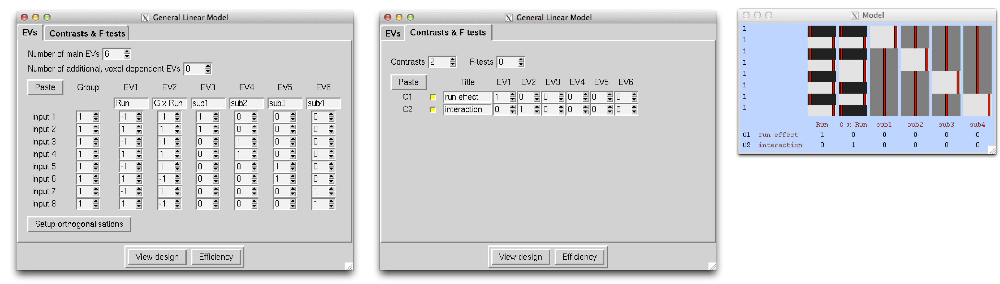 |
Randomise details
Due to how the data would need to be permuted, the FEAT model may not be used in randomise. Instead, just as in the paired t-test example, paired differences within-subject would be computed via fslmaths and a two-sample t-test could be used to test whether the run1-run2 difference differed between the two groups.